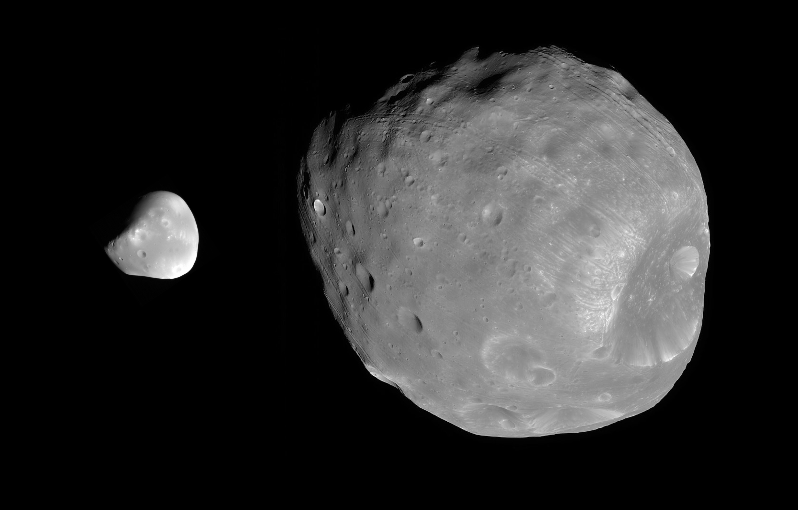
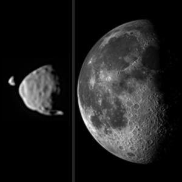
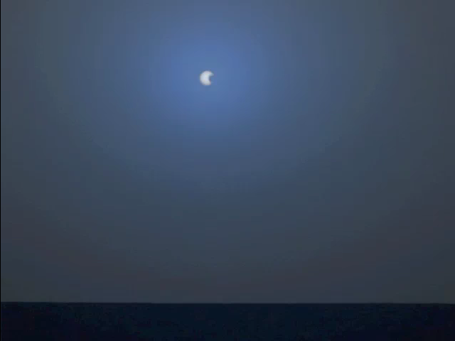
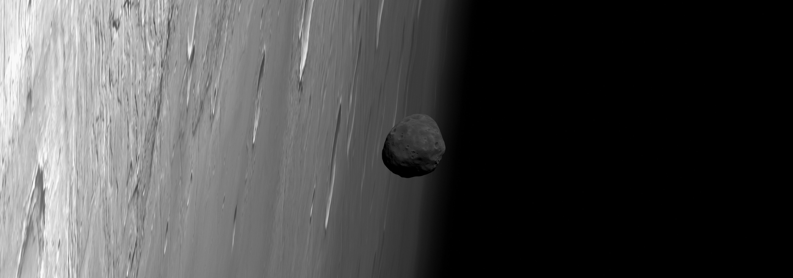
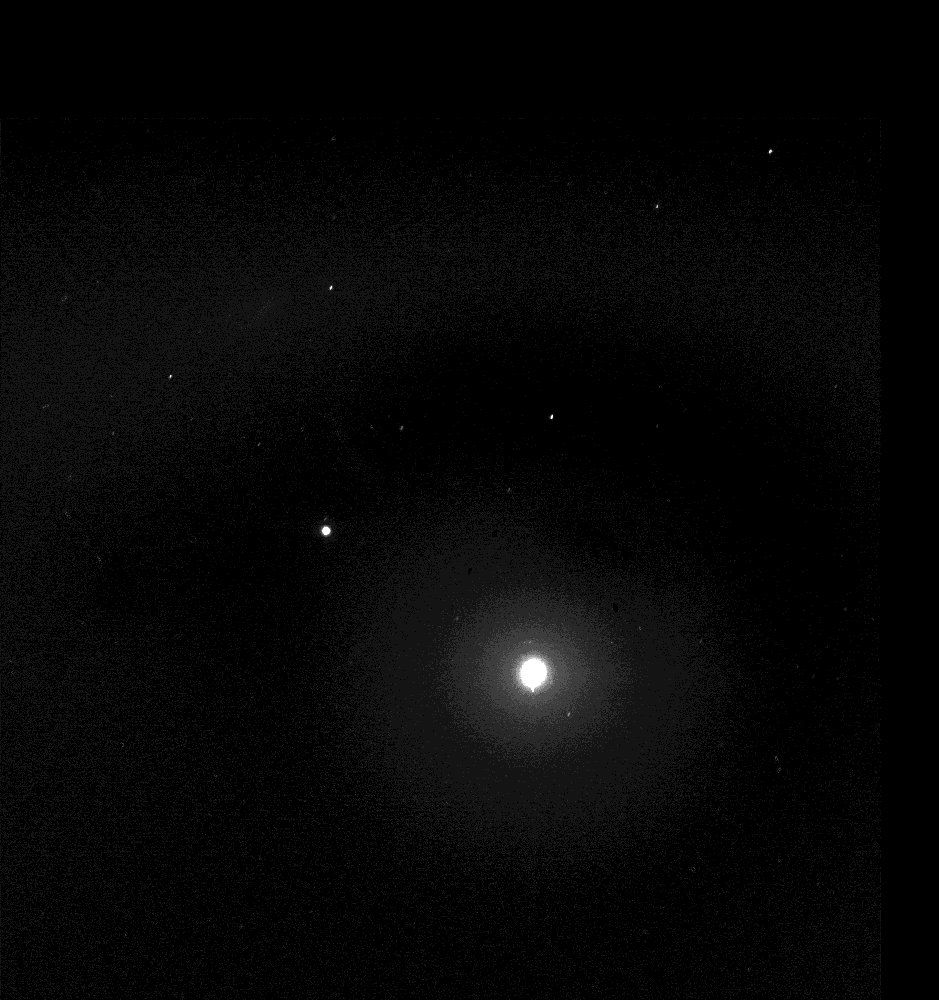
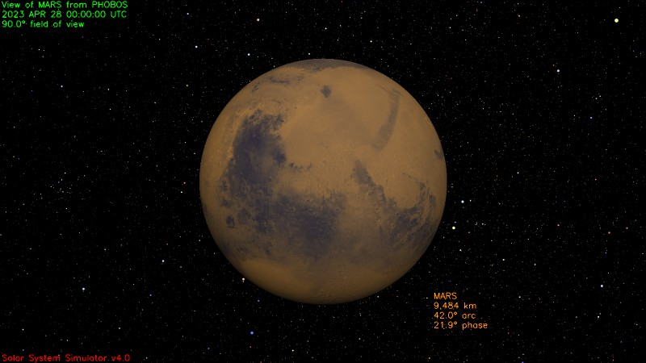
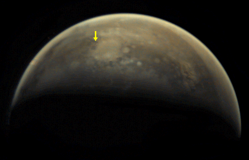
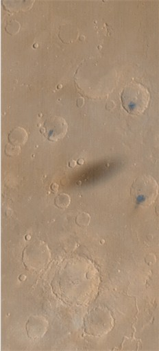

Phobos & Deimos
Apparent size

https://photojournal.jpl.nasa.gov/catalog/PIA17351
This illustration provides a comparison for how big the moons of Mars appear to be, as seen from the surface of Mars, in relation to the size that Earth's moon appears to be when seen from the surface of Earth. Earth's moon actually has a diameter more than 100 times greater than the larger Martian moon, Phobos. However, the Martian moons orbit much closer to their planet than the distance between Earth and Earth's moon.
Deimos, at far left, and Phobos, beside it, are shown together as they actually were photographed by the Mast Camera (Mastcam) NASA's Mars rover Curiosity on Aug. 1, 2013. The images are oriented so that north is up. The size-comparison image of Earth's moon, on the right, is also oriented with north up.
Deimos has a diameter of 7.5 miles (12 kilometers) and was 12,800 miles (20,500 kilometers) from the rover at the time of the image. Phobos has a diameter 14 miles (22 kilometers) and was 3,900 miles (6,240 kilometers) from the rover at the time of the image. Earth's moon has a diameter of 2,159 miles (3,474 kilometers) and is typically about 238,000 miles (380,000 kilometers) from an observer on Earth.

Video, https://photojournal.jpl.nasa.gov/catalog/PIA13737
The larger of the two moons of Mars, Phobos, transits (passes in front of) the sun in this approximately true-speed movie simulation using images from the panoramic camera (Pancam) on NASA's Mars Exploration Rover Opportunity taken on the rover's 2,415th Martian day, or sol (Nov. 9, 2010). The movie includes images that have been calibrated and enhanced, plus simulated frames used to smooth the action. Images of solar transits of Phobos and the other Mars moon, Deimos, taken over many years by Mars rovers aid in studies of slight changes in the moons' orbits.
This movie is based on 10 individual photos taken through the Pancam's special solar filter every four seconds during the transit, which lasted about 32 seconds. The images were gradually blended together to create a simulated near-real-speed animation of the event. The moviemakers supplemented those images with sky color information from a pair of images taken right after the transit through two regular imaging filters: one centered on a wavelength of 440 nanometers (blue) and the other on 750 nanometers (near infrared). The silhouette of Phobos looks smaller than in some other Mars rover transit images (for example, PIA05554) because when Phobos is near the horizon it is more than 30 percent farther from the camera's location than when it is straight overhead.
Albedo and brightness
Phobos in itself is rather dark, but it has an albedo similar to the Earth's Moon. Considering also the relative apparent size (Moon: 0.5°, Phobos: 0.2°), a full Phobos in a clear sky should illuminate as much as a half-full moon.

This seems to be a random picture from Mars Express of so little value that I could not locate a source other than a forum post. Apparently the source for OP was a now dead FTP folder dump of the HRSC: http://www.unmannedspaceflight.com/index.php?s=50e274fb401c38cab101ba75a3e1c9cf&showtopic=480&st=195&p=167059&#entry167059. However, a "sister" picture was later published on APOD (https://apod.nasa.gov/apod/ap101201.html)
Here a mirror of ESA's FTP archives (HRSC, orbit n.7982): https://archives.esac.esa.int/psa/ftp/MARS-EXPRESS/HRSC/MEX-M-HRSC-3-RDR-EXT3-V4.0/BROWSE/7982/H7982_0000_ND3.JPG
{kind=link}

https://photojournal.jpl.nasa.gov/catalog/PIA06340
Taking advantage of extra solar energy collected during the day, NASA's Mars Exploration Rover Spirit recently settled in for an evening of stargazing, photographing the two moons of Mars as they crossed the night sky. In this view, the Pleiades, a star cluster also known as the "Seven Sisters," is visible in the lower left corner. The bright star Aldebaran and some of the stars in the constellation Taurus are visible on the right. Spirit acquired this image the evening of martian day, or sol, 590 (Aug. 30, 2005). The image on the right provides an enhanced-contrast view with annotation. Within the enhanced halo of light is an insert of an unsaturated view of Phobos taken a few images later in the same sequence.
"It is incredibly cool to be running an observatory on another planet," said planetary scientist Jim Bell of Cornell University, Ithaca, N.Y., lead scientist for the panoramic cameras on Spirit and Opportunity. In the annotated animation (figure 2), both martian moons, Deimos on the left and Phobos on the right, travel across the night sky in front of the constellation Sagittarius. Part of Sagittarius resembles an upside-down teapot. In this view, Phobos moves toward the handle and Deimos moves toward the lid. Phobos is the brighter object on the right; Deimos is on the left. Each of the stars in Sagittarius is labeled with its formal name. The inset shows an enlarged, enhanced view of Phobos, shaped rather like a potato with a hole near one end. The hole is the large impact creater Stickney, visible on the moon's upper right limb.
On Mars, Phobos would be easily visible to the naked eye at night, but would be only about one-third as large as the full Moon appears from Earth. Astronauts staring at Phobos from the surface of Mars would notice its oblong, potato-like shape and that it moves quickly against the background stars. Phobos takes only 7 hours, 39 minutes to complete one orbit of Mars. That is so fast, relative to the 24-hour-and-39-minute sol on Mars (the length of time it takes for Mars to complete one rotation), that Phobos rises in the west and sets in the east. Earth's moon, by comparison, rises in the east and sets in the west. The smaller martian moon, Deimos, takes 30 hours, 12 minutes to complete one orbit of Mars. That orbital period is longer than a martian sol, and so Deimos rises, like most solar system moons, in the east and sets in the west.
Scientists will use images of the two moons to better map their orbital positions, learn more about their composition, and monitor the presence of nighttime clouds or haze. Spirit took the five images that make up this composite with the panoramic camera, using the camera's broadband filter, which was designed specifically for acquiring images under low-light conditions.
Solar eclipses by Phobos
Phobos orbits very quickly and in the opposite direction from the Sun. It also eclipses it regularly. This means that Phobos' shadow should be visible from Phobos itself on the Martian surface.
From Wikipedia: https://en.wikipedia.org/wiki/Transit_of_Phobos_from_Mars
A transit of Phobos from Mars usually lasts only thirty seconds or so, due to the moon's very rapid orbital period of about 7.6 hours.
Because Phobos orbits close to Mars and in line with its equator, transits of Phobos occur somewhere on Mars on most days of the Martian year. Its orbital inclination is 1.08°, so the latitude of its shadow projected onto the Martian surface shows a seasonal variation, moving from 70.4°S to 70.4°N and back again over the course of a Martian year. Phobos is so close to Mars that it is not visible south of 70.4°S or north of 70.4°N; for some days in the year, its shadow misses the surface entirely and falls north or south of Mars.
At any given geographical location on the surface of Mars, there are two intervals in a Martian year when the shadow of Phobos or Deimos is passing through its latitude. During each such interval, about half a dozen transits of Phobos can be seen by observers at that geographical location (compared to zero or one transits of Deimos). Transits of Phobos happen during Martian autumn and winter in the respective hemisphere; close to the equator they happen around the March and September equinoxes, while farther from the equator they happen closer to the winter solstice.
Observers at high latitudes (but less than 70.4°) will see a noticeably smaller angular diameter for Phobos because they are considerably farther away from it than observers at Mars's equator. As a result, transits of Phobos for such observers will cover less of the Sun's disk. Because it orbits so close to Mars, Phobos cannot be seen north of 70.4°N or south of 70.4°S; observers at such latitudes will obviously not see transits, either.
Lunar eclipses
WIP. Very vintage reference about those: https://ui.adsabs.harvard.edu/abs/1923PPCAS...8...10C/abstract ( backup )
Apparent size of Mars from Phobos
Apparent size = diameter/distance * 3438 arcminutes
- Periapsis of Phobos: about 9000km
- Diameter of Mars: about 6600km
Apparent size of Mars from Phobos is therefore 2521', so 42°. For comparison, the Sun as seed from Earth is only 32'. Knowing that the human field of view is 210° horizontal and 150° vertical, the Martian disk can be seen in full, even considering that binocular vision only spans for 120°H-60°V.
Mars from Phobos, aperture 90°:

From NASA's simulator at https://space.jpl.nasa.gov/cgi-bin/wspace?tbody=499&vbody=401&month=4&day=28&year=2023&hour=00&minute=00&fovmul=1&rfov=90&bfov=30&showac=1
Phobos shadow as seen from Phobos
Regarding the possibility to see Phobos' shadow on Mars from Phobos itself:
Viewed from orbit, the penumbral shadow of Phobos can be seen to move rapidly over the Martian surface. This shadow on the Martian surface has been photographed on many occasions by Mars Global Surveyor. In the 1970s, the Viking 1 Lander and Orbiter photographed the shadow as well. The Lander detected the penumbral shadow of Phobos passing across it. This was detected only as a slight dimming of the ambient light; the Viking 1 Lander camera did not image the Sun. The shadow took about 20 seconds to pass over the Lander, moving at about 2 km/s. The shadow was simultaneously imaged from the Viking 1 Orbiter, which permitted locating the position of the lander in the orbiter pictures.

https://www.planetary.org/space-images/phobos-shadow-transits-mars
Phobos' shadow transits Mars In a six-frame animation spanning 15 minutes over January 30-31, 2010, the Mars Express Visual Monitoring Camera observed Phobos' shadow transiting Mars. It is late autumn in Mars' southern hemisphere, so the shadow of Phobos (which orbits exactly along Mars' equatorial plane) falls on Mars' high southern latitudes. Mars Express is looking down nearly onto Mars' south pole, which is in winter darkness; the bright splat at the center of the animation is the Argyre impact basin, with the crater Galle located on its rim. Phobos' shadow crosses northern Argyre and proceeds across Noachis terra. This is the first time that VMC was known to have imaged Phobos' shadow.
Note that it's very small, barely visible in the gif itself. However it's useful to have an idea of the speed of such transit.
Here another video: Youtube: https://www.youtube.com/watch?v=ry3HYHpnURI ( backup ) Found at: https://www.planetary.org/articles/2830
Viking 1 observes a dust storm and Phobos' shadow On September 28, 1977, Viking Orbiter 1 observed a dust storm over the site where it had dropped its lander, a little more than a year previously. As Viking 1 orbiter watched, the shadow of Mars' inner moon Phobos passed over the cloud tops. The sequence of images has been artificially colorized and is displayed at a speed ten times that of real time. (Viking images f467a31 - f467a69)
This one shows even better how hard it is to see the shadow. It's best to consider it not really visible.

MSSS Mars Global Surveyor, 1999
From Wikimedia: https://en.wikipedia.org/wiki/File:Phobos_shadow.jpg Part of https://asimov.msss.com/moc_gallery/ab1_m04/images/M0403241.html and https://asimov.msss.com/moc_gallery/ab1_m04/images/M0403242.html
{kind=link}
The penumbral shadow of Phobos is visible on the landscape of Mars, as photographed by the Mars Global Surveyor. The center of the shadow was at approximately 10.9°N 49.2°W (Map of area Map zoom) at 04:00:33.3 UTC Earth time.
The image shows western Xanthe Terra on August 26 1999 at about 2:41 p.m. local solar time on Mars. The image covers an area about 250 kilometers across and is illuminated from the left. The dark spots on the crater floors are probably dark sand dunes. None of the craters pictured currently have names. Nanedi Valles is the meandering valley at the bottom right. The picture covers about 7°--15°N vertically and 52°--48°W horizontally. The vertical orientation of the image is 3.01° to the west of north; a north-pointing arrow superimposed on the image would point slightly to the right.
To determine the time of the shadow, we can look up the original image files at M04-03241 (red) https://asimov.msss.com/moc_gallery/ab1_m04/nonmaps/M0403241.gif and M04-03242 (blue) https://asimov.msss.com/moc_gallery/ab1_m04/nonmaps/M0403242.gif. The "image start time" was 03:26:13.01 UTC, the \"line integration time\" is 80.4800 milliseconds, and the \"downtrack summing\" factor is 4. Since the shadow is centered at 6400 pixels from the bottom of the original 10800-pixel-high image (Mars Global Surveyor had a south-to-north sun-synchronous orbit), we add (6400 * 0.08048 * 4) = 2060.3 seconds = 34 minutes 20.3 seconds to get a time of 04:00:33.3 UTC for the center of the shadow.
{kind=link}
{kind=link}
Ancillary data for MOC wide-angle image M04-03241
Acquisition parameters
Image ID (picno): M04-03241
Image start time: 1999-08-26T03:26:13.01 SCET
Image width: 256 pixels
Image height: 10800 pixels
Line integration time: 80.4800 millisec
Pixel aspect ratio: 1.03
Crosstrack summing: 4
Downtrack summing: 4
Compression type: MOC-NONE
Gain mode: 3A (hexadecimal)
Offset mode: 5 (decimal)
Derived values
Longitude of image center: 47.47°W
Latitude of image center: 5.68°S
Scaled pixel width: 961.72 meters
Scaled image width: 258.01 km
Scaled image height: 10556.75 km
Solar longitude (Ls): 194.55°
Local True Solar Time: 14.25 decimal hours
Emission angle: 3.54°
Incidence angle: 40.67°
Phase angle: 37.14°
North azimuth: 93.01°
Sun azimuth: 0.17°
Spacecraft altitude: 380.63 km
Slant distance: 381.29 km
The shadow of Phobos, from the images and the data, is about 90px * 1000m = 9km, so really really small with respect to the size of the disk. The size of the Martian disk from Phobos is apparent size = diameter/distance * 3438 arcminutes = 9km / 9000km * 3438 ~= 3'
For comparison, Venus or the ISS are about 1'. However, they are bright, which makes them a lot more visible. Considering that Mars itself is bright and the shadow only penumbral, it's probly quite hard to spot, even if it moves.